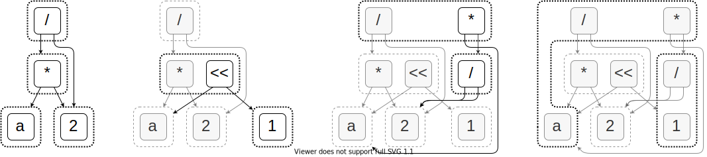

Proofs: E-Graphs to the Rescue

E-graphs are a data structure for representing and rewriting terms
You can extract proofs from e-graphs
Usually input and output terms are supposed to be in the same language
e.g., when optimizing programs
But can we use e-graphs as a proof generating compiler?
Yes! At least for some pairs of languages (which ones?)
But you cannot just extract the smallest term anymore
Willsey et al. (2021); Flatt et al. (2022)